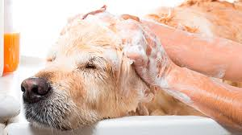
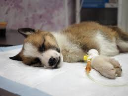
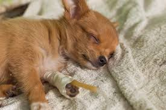
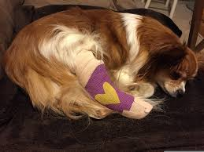
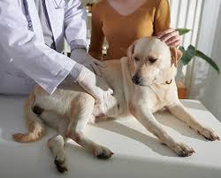
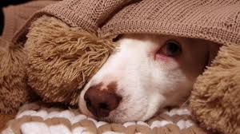

Tipos de baños especiales
Baños con productos especializados para tratar diferentes condiciones de la piel y eliminar parásitos.
- Baño Medicado: Shampoo antipulgas y garrapaticida.
- Baño para Sarna: Tratamiento con shampoo especial.
- Baño Antiséptico: Uso de desinfectantes para infecciones.
- Baño Dermatológico: Shampoo para piel sensible o alérgica.
¡Costo adicional de $100 Pesos!

Tratamiento para Moquillo
Cuidados específicos para perros con moquillo.
- Hidratación intravenosa para evitar deshidratación.
- Antibióticos para infecciones secundarias.
- Suplementos para fortalecer el sistema inmunológico.
¡Con un costo de $300 Pesos!

Tratamiento para Parvovirus
Terapia intensiva para combatir el parvovirus.
- Fluidos intravenosos para rehidratación.
- Antibióticos para prevenir infecciones.
- Medicamentos para controlar vómitos y diarrea.
¡Con un costo de $250 Pesos!

Atención a Fracturas
Diagnóstico y tratamiento de fracturas.
- Radiografías para evaluar el daño.
- Yeso o férulas para inmovilización.
- Cirugía en casos severos.
¡Con un costo de $550 Pesos!

Dolor de Estómago
Evaluación y tratamiento para molestias estomacales.
- Dieta especial y medicamentos digestivos.
- Desparasitantes si es necesario.
- Análisis para descartar infecciones.
¡Con un costo de $150 Pesos!

Tratamiento para Gripe
Cuidado y recuperación de gripe en mascotas.
- Antibióticos en caso de infecciones bacterianas.
- Nebulizaciones para facilitar la respiración.
- Vitaminas para fortalecer el sistema inmunológico.
¡Con un costo de $300 Pesos!
